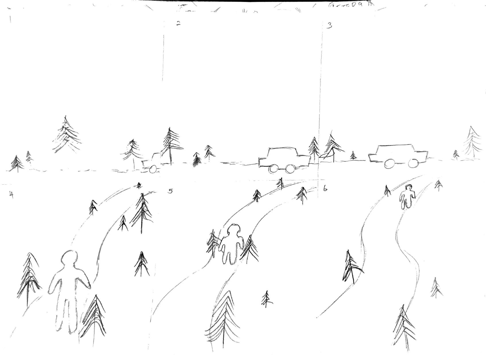
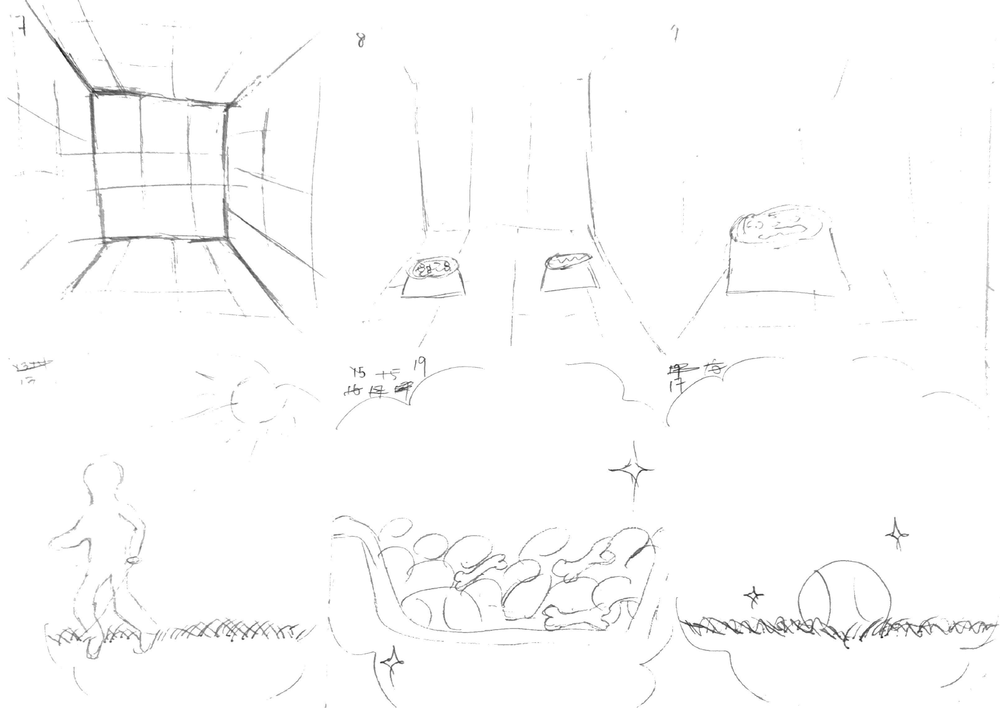
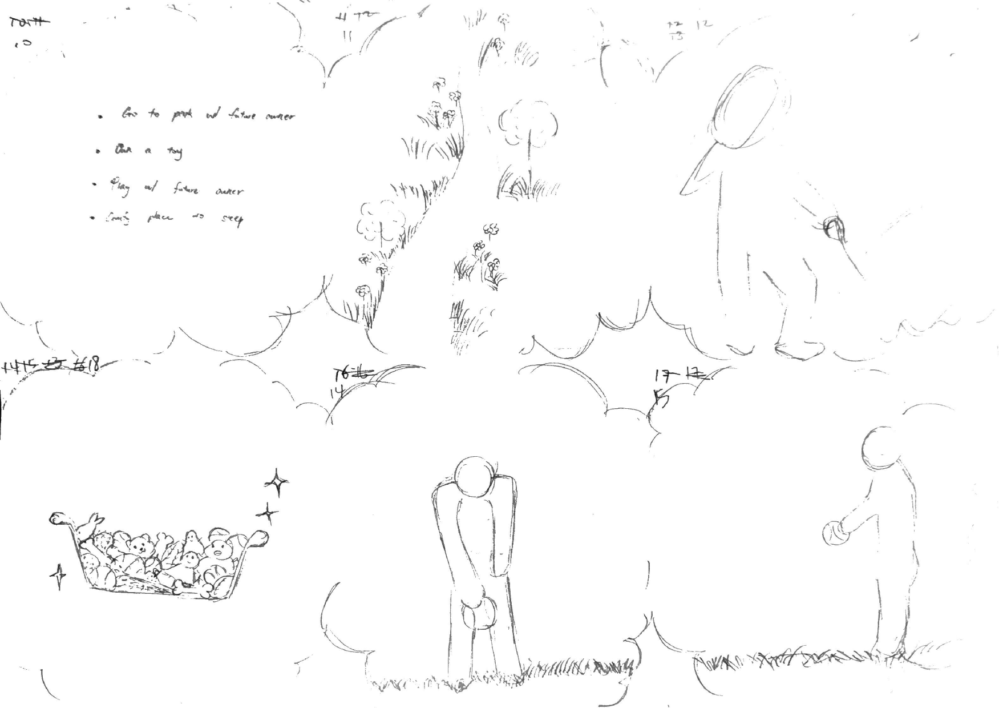
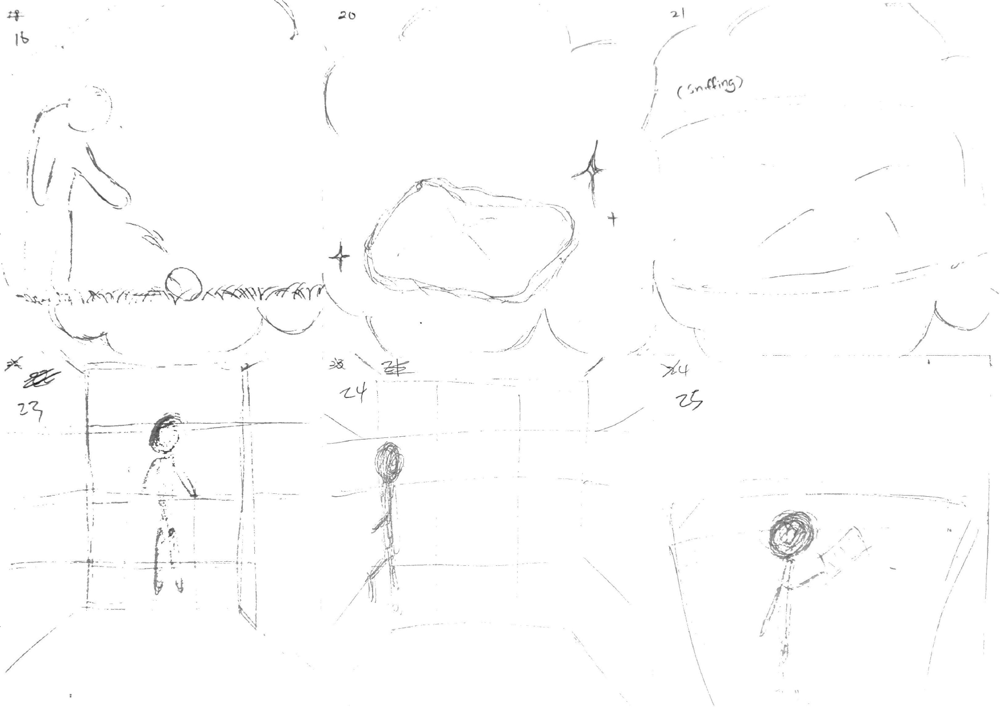
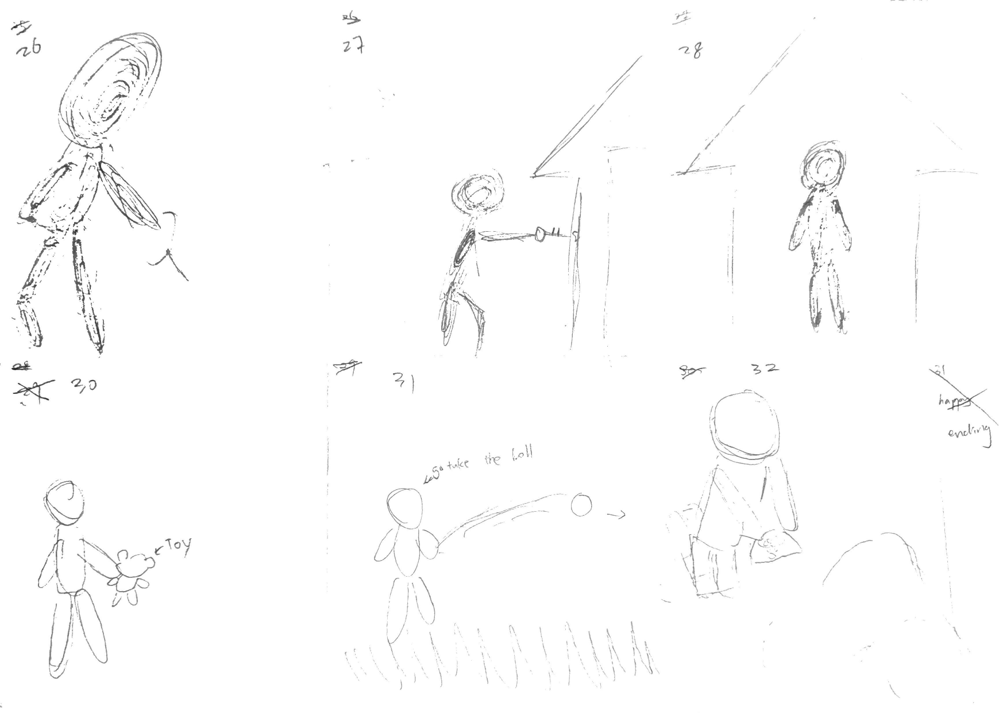
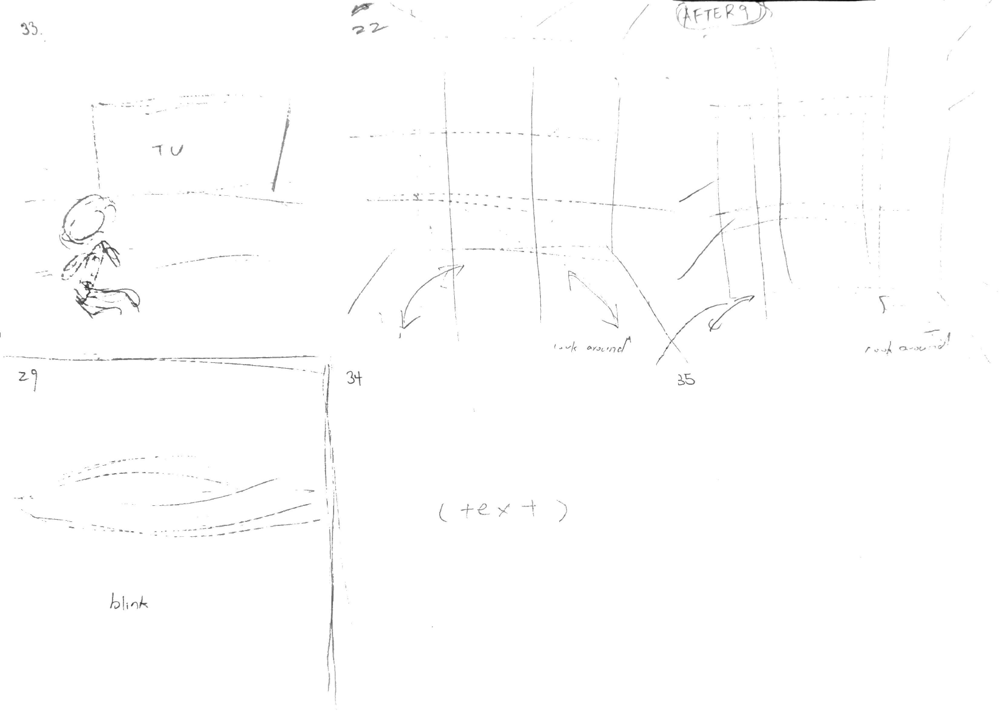

Ima
Ima
Production Journal ᯓ★
Production Journal🫠
Participating in this video project has been an eye-opening experience that taught me making a movie
requires far more than just pressing the record button. As the camera man, I realized that capturing the
perfect shot demands immense flexibility, quick problem-solving, and seamless teamwork.
During the production, our team encountered major challenges that truly tested our adaptability. We
initially planned to shoot most of our scenes within or around the school, but we quickly realized that
certain critical scenes required a completely different environment. To capture the right atmosphere, we
had to transport our equipment and travel all the way up into the mountains. Adapting to the outdoor
terrain and managing the gear was physically demanding, but it was essential to bring our vision to
life.
Another unexpected challenge arose right before we began filming the animal shelter scene, when we
discovered that the cage we had prepared as a key prop had accidentally been given away and removed from
the site. With no time to spare, we had to think on our feet and decided to use the iron gate on the
first floor of our school as a substitute. By creatively adjusting our framing, lighting, and camera
angles, we successfully replicated the caged environment.
This journey taught me that a great camera man doesn't just look through the lens—they must remain calm
and resourceful when things go wrong. Facing these unexpected obstacles head-on not only pushed our
creative boundaries but also proved how vital strong teamwork is to a successful production.
Shot List🎥
Animatics😎
Storyboard✍️





